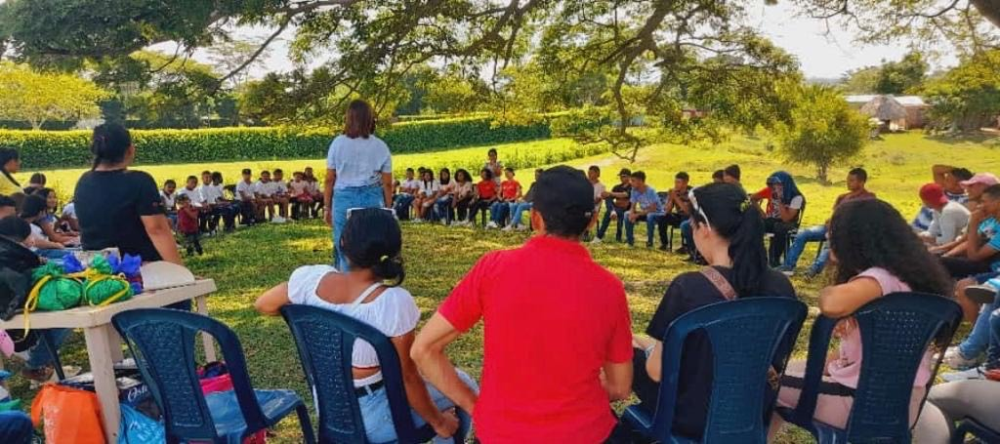
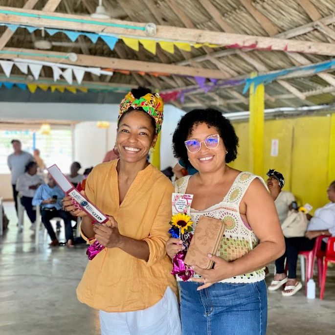
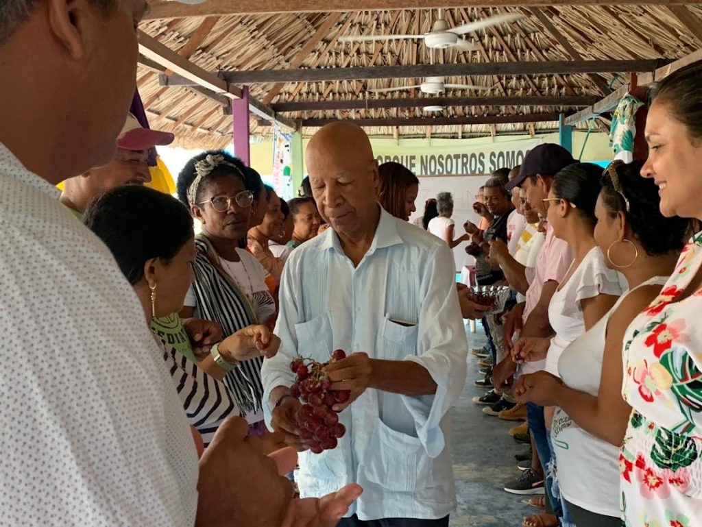
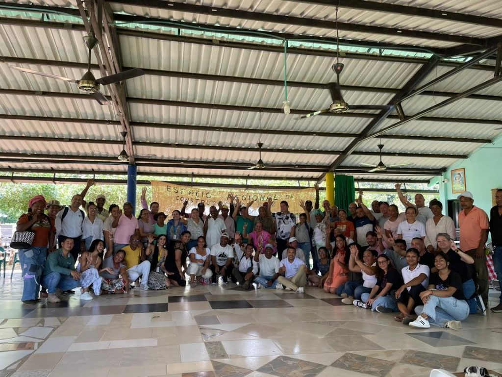

Political Culture
Sembrandopaz works under the premise that sustainable communities require political empowerment. It promotes dialogue between former enemies, builds bridges with state institutions, and strengthens civil society in peacebuilding by supporting community and legal processes to secure rights and reparations.

Its mission is to foster peace, nonviolence, and conflict resolution in areas deeply affected by armed conflict, serving as a facilitator for grassroots organizations to advance social justice and sustainable human development.
Strategies operate on multiple levels:
- Citizens’ Agora Gatherings: local forums for participation, training, and advocacy with government actors
- Montes de María Regional Peacebuilding Space: subregional gathering where communities, NGOs, and state institutions have collaborated monthly for over a decade
- Convergence Spaces: national-level collaboration and advocacy to rebuild the social fabric in conflict-affected regions



I was surprised by the ability to have so many people from different sectors, together in one setting, working for peace. It has been important for me to learn from Sembrandopaz how to build peace with everyone and for everyone… Sembrandopaz teaches in practice this hope and possibility.
[The Regional Space for Peacebuilding in Montes de María] is a model for the world – a network born of a seed, with a vision planted in the ground but with a perspective to accompany, dream and practice peace.